Oggi
domanda 1
Hubble
"Guardiamo insieme oltre le stelle, fai domande, esplora l'infinito!"
suggerimeti sulle possibili domande
<
Cos’è un buco nero nello spazio profondo?
Come nasce una stella nell’universo?
Cosa sono le galassie esattamente?
Perché la Luna cambia forma visibile?
Che cos’è un’eclissi solare totale?
Come si misura la distanza spaziale?
Che differenza c’è tra meteora e cometa?
Come si formano i pianeti giganti?
Che cos’è la Via Lattea galattica?
Perché lo spazio è completamente muto?
>
